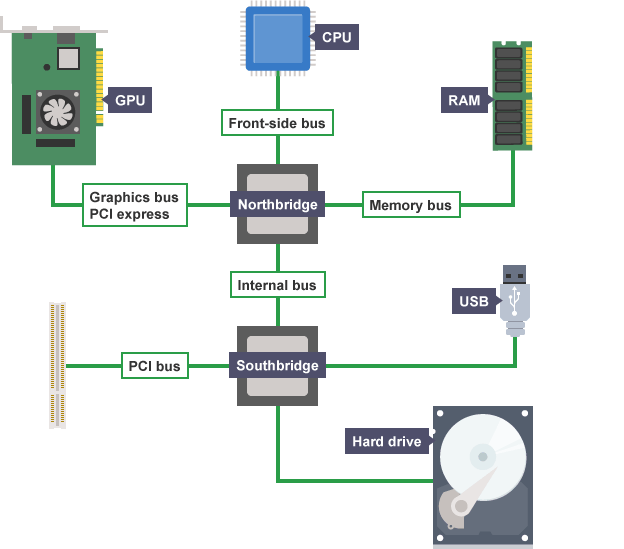

Chipset
El chipset es el conjunto de circuitos integrados que se encuentran en la placa base. Cada chipset es normalmente diseñado para trabajar con una familia de microprocesadores en concreto. Dado que el chipset controla todas las comunicaciones entre el procesador y el resto de dispositivos juega un papel importantisimo en el rendimiento del sistema.Podemos dividor un chipset principalemnte en dos zonas, el puente norte (northbridge) y el puente sur (southbridge). El northbridge comunica la CPU con la memoria RAM y la tarjeta gráfica por lo que trabaja a unas velocidades altisimas, el southbridge comunica los buses de perifericos e integra algunos perifericos propios como la tarjeta de red, los puertos USB, la tarjeta de audio, etc. 
FSB
El front-side bus, también conocido por su acrónimo FSB (del inglés literalmente "bus de la parte frontal"), es el tipo de bus usado como bus principal en algunos de los antiguos microprocesadores de la marca Intel para comunicarse con el circuito integrado auxiliar o chipset. Al ser el medio de comunicación del procesador con el resto del sistema se convierte en un cuello de botella.El término comenzó a usarse por Intel Corporation en la década de 1990, con la salida de los microprocesadores Pentium Pro y Pentium II. Este diseño representó una mejora del rendimiento con respecto al bus de sistema de las décadas anteriores y empezó a formar parte de la arquitectura de computadoras estándar desde que las aplicaciones requirieron más memoria de la que el procesador podría retener.
No fue hasta 2001 y la aparición de la tecnología HyperTransport empleada por AMD, que se pudo reemplazar el uso del FSB. Actualmente empresas fabricantes de chipsets como NVIDIA, Silicon Integrated Systems o VIA Technologies, ya han comenzado a eliminar el uso del FSB sustituyéndolo con la versión 3.0 de HyperTransport. En los nuevos procesadores de Intel, desde Nehalem, se emplea otro tipo de bus como el Intel QuickPath Interconnect.
La frecuencia de trabajo del microprocesador se obtiene como resultado de multiplicar la frecuencia de reloj del FSB por un factor multiplicador. Por ejemplo, un procesador con un multiplicador 21x y está diseñado para operar en una tarjeta madre con una velocidad de 133 MHz para el FSB, esto dará una velocidad del reloj de 2.8 GHz. La velocidad del reloj impresa en un CPU o en su empaque no es un número fijo; si ajustas el multiplicador de la velocidad del FSB, la velocidad del CPU cambia, es lo que se conoce como overclocking. En el ejemplo, si aumentamos a 150 MHz, da como resultado en una velocidad del reloj del CPU de 3.15 GHz